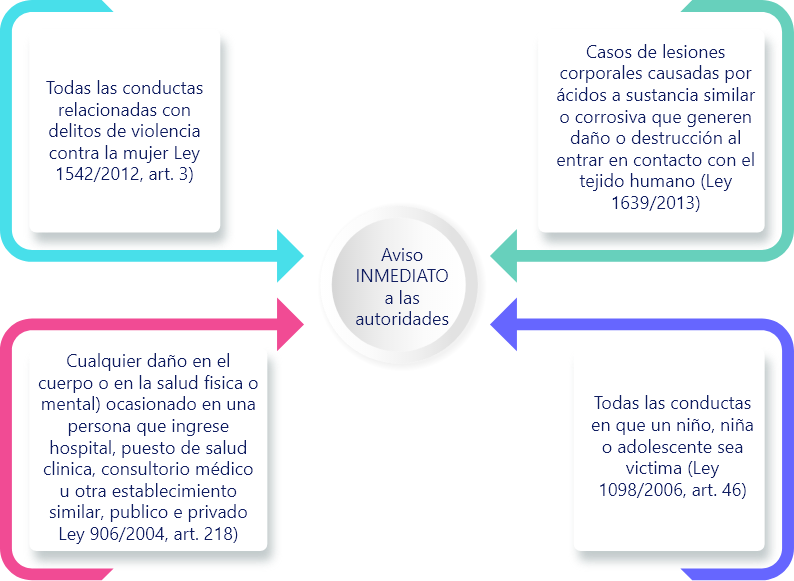
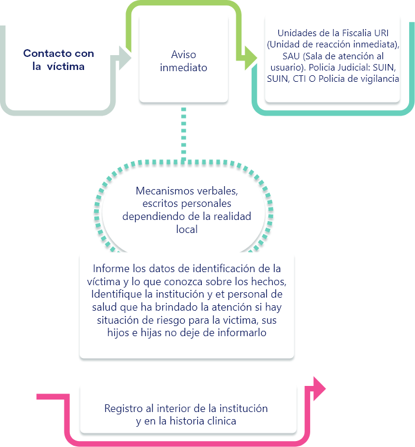

Introducción
Las violencias de género son violaciones sistemáticas y masivas de los derechos humanos que afectan la vida, la salud física, mental y social, la integridad, la libertad e igualdad de niñas, niños, adolescentes, jóvenes, mujeres, hombres y personas con orientaciones diferentes a la heterosexual, en particular a las de la comunidad de lesbianas, gays, bisexuales, transgénero e intersexuales (LGBTI).
Estas violencias se constituyen en una problemática de salud pública por varias razones: primero, debido a las graves afectaciones en el bienestar y la salud física y emocional de las víctimas, sus familias y la sociedad en general, y por los años de vida saludable perdidos. Segundo, por su magnitud, es decir, la cantidad de población afectada, principalmente niñas, niños, adolescentes, jóvenes y mujeres; lo cual evidencia que la violencia de género es un asunto social y de interés público y no meramente un problema psicológico circunscrito al ámbito de lo privado, por lo tanto, requiere una acción coordinada por parte del Estado, y tercero porque son evitables ya que sus causas son culturales y sociales, y no biológicas y hereditarias
El Instituto Nacional de Salud (2017) con el acompañamiento del Ministerio de Salud y Protección Social ha priorizado la vigilancia de la violencia de género por tratarse de una vulneración de los derechos humanos y un evento de interés en salud pública para poder aportar a la política pública de la violencia de género dirigida especialmente a mujeres, niñas y personas con identidad de género y orientaciones sexuales no heteronormativas.
1. Notificación en formato SIVIGILA
De acuerdo con el Instituto Nacional de Salud (2017), la violencia de género e intrafamiliar es un evento de vigilancia y control en salud pública, por lo que debe reportarse obligatoriamente al Sistema Nacional de Vigilancia en Salud Pública (Sivigila). El propósito de la vigilancia del evento es generar información periódica del comportamiento de la notificación de la violencia de género e intrafamiliar a nivel nacional, que permita orientar la toma de decisiones para su prevención y control.

El Instituto Nacional de Salud (INS) con el acompañamiento del Ministerio de Salud y protección social ha priorizado la vigilancia de la violencia de género por tratarse de una vulneración de los derechos humanos y un evento de interés en salud pública.
1.1 Descripción del evento:
La violencia puede producirse en todas las etapas de la vida: la infancia, la adolescencia, la adultez y la vejez. Todo acto de violencia contra cualquier persona de ambos sexos puede acarrear consecuencias negativas para la salud que deben ser abordadas por los sistemas sanitarios. Sin embargo, es imperioso que se le preste especial atención a las violencias contra las niñas y las mujeres, por las siguientes razones: la invisibilidad de este tipo de violencia en las estadísticas nacionales e internacionales, su aceptabilidad social, los obstáculos económicos y sociales para la búsqueda de ayuda (como la venganza y el estigma), el poco efecto de las sanciones legales y la limitada capacidad de los sistemas de salud para detectar y brindar la atención a los sobrevivientes.
Es importante especificar que la violencia contra la mujer no es igual a la violencia de género, las personas con orientaciones sexuales e identidades de género no normativas también son víctimas de violencia de género, dada por relaciones asimétricas que se generan por lo sobrevaloración de lo masculino y la subvaloración de lo femenino; discriminando las diferentes formas de orientación sexual e identidades de género no heteronormativas.
La perspectiva de género destaca el patriarcado, las relaciones de poder y las construcciones jerárquicas de la masculinidad y la feminidad como motor predominante y generalizado del problema. Estos elementos se aducen como condiciones necesarias para dominar a las mujeres y dan lugar a una desigualdad estructural de género.
1.2 Violencias de género según sus características
Durante 2016 se realizó en el marco del subcomité de sistemas de información de violencias de género el documento marco conceptual, normativo y operativo del Sistema Integrado de Información de Violencias de Género – SIVIGE, donde se avanzó en la homologación de las definiciones de violencia de género, que se utilizarán por los diferentes sectores.
Violencia Psicológica: Entendida como toda acción y omisión destinada a degradar o controlar las acciones, comportamientos, creencias y decisiones de otras personas por medio de cualquier conducta que implique perjuicio, afectaciones en la salud psicológica, mental, la autodeterminación, la percepción de sí mismo o el desarrollo personal..
Violencia Física: Es cualquier agresión, mediante el uso de la fuerza o cualquier mecanismo, que pueda ocasionar daños físicos internos o externos a la persona agredida y pone en riesgo o disminuye su integridad corporal.
Dentro de este tipo de violencia se incluyen golpizas, empujones, sacudidas, estrujones, agresiones con objetos o con líquidos, ácidos, álcalis, sustancias similares o corrosivas que generen daño o destrucción al entrar en contacto con el tejido humano.
Violencia Sexual: Todo acto o comportamiento sexual ejercido sobre una persona a través del uso de la fuerza; la amenaza del uso de la fuerza; la coacción física, psicológico o económica; o cualquier otro mecanismo que anule o limite la voluntad personal aprovechando las situaciones y condiciones de desigualdad; y las relaciones de poder existentes entre víctima y agresor.
Violencia económica: Cualquier acto que desconozca o restrinja el derecho a los ingresos, a la propiedad, el uso y disfrute de bienes y servicios, que tiene una persona, o que atenta contra otros derechos económicos de la víctima aprovechando las situaciones y condiciones de desigualdad; y las relaciones de poder existentes entre víctima y agresor. (Ministerio de Salud y Prosperidad Social., 2016. Pág. 67 y 68).
Los ataques con agente químico son considerados un tipo de violencia física dentro del marco de las violencias de género.
1.3 Objetivos de la vigilancia del evento
Describir el comportamiento de la notificación del evento según variables de persona, lugar, tiempo.
Analizar el evento según las características de la violencia, de la víctima y del agresor.
1.4 Definición operativa de caso
| Tipo de caso | Características de la clasificación |
| Caso sospechoso violencia de género e intrafamiliar | Todas las violencias sexuales, físicas, psicológicas o por negligencia y abandono resultado de acciones o conductas agresivas basadas en relaciones de poder y asimétricas o relacionadas con la sobrevaloración de lo masculino y subvaloración de femenino. Deben notificarse:
|
1.5 Periodicidad y responsabilidades en la notificación de casos de violencia de género e intrafamiliar.
En todos los casos de víctimas de ataques con agentes químicos independiente del sexo o edad de la víctima se debe realizar notificación inmediata.
| Notificación | Responsable |
| Notificación semanal | Las Unidades Primarias Generadoras de Datos (UPGD) deben realizar notificación semanal de 100% de los casos sospechosos de violencia de género e intrafamiliar al Sivigila a través de las fichas de datos básicos y complementarios (código INS 875), garantizando la calidad del dato. Las Unidades Notificadoras Municipales (UNM) deben revisar la notificación de las UPGD de su territorio, (verificando la calidad del dato) consolidar los datos y realizar notificación semanal a las Unidades Notificadoras Departamentales. Las Unidades Notificadoras Departamentales o Distritales (UND) deben revisar la notificación de los municipios o localidades de su territorio (verificando la calidad del dato), consolidar los datos y notificar al Instituto Nacional de Salud. El Instituto Nacional de Salud (INS) estará encargado de consolidar y analizar la información de los departamentos, brindará apoyo técnico a las entidades territoriales en el desarrollo del proceso de notificación, realizará verificación y depuración de los datos notificados al Sivigila, y realizará realimentación de información a las entidades territoriales departamentales y distritales. |
| Notificación inmediata | Las responsabilidades de las UPGD, UNM, UND e INS son las mismas definidas para la notificación semanal |
1.6 Diligenciamiento de la ficha en casos de ataque por agente químico
2. Reporte en RIPS con código CIE-10 correspondiente.
De acuerdo con el Instituto Nacional de Salud (2017), la violencia de género e intrafamiliar es un evento de vigilancia y control en salud pública, por lo que debe reportarse obligatoriamente al Sistema Nacional de Vigilancia en Salud Pública (Sivigila). El propósito de la vigilancia del evento es generar información periódica del comportamiento de la notificación de la violencia de género e intrafamiliar a nivel nacional, que permita orientar la toma de decisiones para su prevención y control.
Códigos CIE 10 relevantes para diligenciar los RIPS en los casos de ataque con agente químico:
| T20 | Quemadura y corrosión de la cabeza y cuello |
|
| T21 | Quemadura y corrosión del tronco |
|
| T22 | Quemadura y corrosión del hombro y del miembro superior, excepto de la muñeca y de la mano |
|
| T23 | Quemadura y corrosión de la muñeca y de la mano |
|
| T24 | Quemadura y corrosión de la cadera y miembro inferior, excepto tobillo y pie |
|
| T25 | Quemadura y corrosión del tobillo y del pie |
|
| T26 | Quemadura y corrosión limitada al ojo y sus anexos |
|
| T27 | Quemadura y corrosión de las vías respiratorias |
|
| T28 | Quemadura y corrosión de otros órganos internos |
|
| T29 | Quemadura y corrosión de múltiples regiones del cuerpo |
|
| T30 | Quemadura y corrosión, región del cuerpo no especificada |
|
| T32 | Corrosiones clasificadas según la extensión de la superficie del cuerpo afectada |
|
Códigos CIE 10 relevantes para diligenciar los RIPS como diagnóstico secundario de violencia física
| Y080 | Agresión por otros medios especificados, ocurrida en una vivienda |
| Y081 | Agresión por otros medios especificados, ocurrida en una institución residencial |
| Y082 | Agresión por otros medios especificados, ocurrida en una escuela, en otra institución, o en un área administrativa pública |
| Y083 | Agresión por otros medios especificados, ocurrida en un área de deporte o atletismo |
| Y084 | Agresión por otros medios especificados, ocurrida en una calle o carretera |
| Y085 | Agresión por otros medios especificados, ocurrida en un comercio o en un área de servicios |
| Y086 | Agresión por otros medios especificados, ocurrida en un área industrial o de la construcción |
| Y087 | Agresión por otros medios especificados, ocurrida en una granja (o predio agrícola) |
| Y088 | Agresión por otros medios especificados, ocurrida en otro lugar especificado |
| Y089 | Agresión por otros medios especificados, ocurrida en un lugar no especificado |
3. Articulación intersectorial.
Cualquier agresión cometida en contra de una persona es una violación a sus derechos humanos y, como tal, involucra una responsabilidad estatal de respeto, garantía y protección que se refuerza e implica una máxima diligencia en la atención de cualquier caso de violencia.
En este sentido, los funcionarios y funcionarias del sector salud tienen responsabilidad en el restablecimiento de los derechos de las víctimas de ataques con agentes químicos, que no se limitan al tratamiento médico, en la medida en que el derecho a la salud tiene una dimensión más amplia y las situaciones de violencia vulneran otros derechos que de la misma forma imponen actuaciones inmediatas e integrales.
En cumplimiento de estas obligaciones, el personal de salud debe dar aviso de manera inmediata a las autoridades competentes, tanto del sector Justicia como del sector Protección, y recolectar los elementos materiales probatorios, así como informar el derecho que tiene la víctima a su protección integral y a la de sus hijos e hijas.
3.1 Notificación al sector justicia
El aviso del hecho de violencia a las autoridades permite que las víctimas tengan acceso a la verdad, la justicia, una reparación integral y garantías de que el hecho violento no se repita.
Teniendo en cuenta que una vez la víctima ingrese a la institución de salud pública o privada se debe avisar a las autoridades con funciones de policía judicial, se debe identificar las entidades con dichas funciones, tales como el Cuerpo Técnico de Investigación (CTI) de la Fiscalía, SIJÍN, Policía de Infancia y Adolescencia o quien haga sus veces, de acuerdo con el artículo 218 del Código de Procedimiento Penal (CCP)
3.2 Notificación al sector protección
Las violencias de género, además de las graves afectaciones en la salud física y mental de las víctimas, suponen en el mayor de los casos situaciones de riesgo que deben ser atendidas de manera oportuna por parte de las autoridades competentes a través de la implementación de medidas de protección; esto con el fin de prevenir futuras agresiones y garantizar la efectividad de los derechos a la vida, la integridad personal y la seguridad de las víctimas.
Dependiendo el contexto en el que ocurra la violencia o si se trata de algunas personas en particular, las autoridades competentes son:
El aviso del hecho de violencia a las autoridades permite que las víctimas tengan acceso a la verdad, la justicia, una reparación integral y garantías de que el hecho violento no se repita.
3.3 Procedimiento institucional para la articulación intersectorial
Asimismo, cada institución debe establecer los procesos y procedimientos para avisar a las autoridades competentes. Tener en cuenta que en algunos casos y de acuerdo con el contexto, esto será posible a través de llamadas telefónicas, comunicación por fax o correos electrónicos y escritos, en otros será incluso necesaria una comunicación personal.
Cada IPS debe contar en el servicio de urgencias con un directorio telefónico que incluya, como mínimo, los datos correspondientes en su región y localidad de las autoridades competentes.
Agotar estas acciones es un primer paso para la atención integral a la que tienen derecho las víctimas de violencia. En cualquier caso, activar los mecanismos acordados es una obligación de cada uno de los funcionarios y las funcionarias que brindan atención, incluso desde el primer contacto con las víctimas.
Sin importar el momento en el que haya intervenido, si usted tiene conocimiento de un caso de agresión con agentes químicos, debe inmediatamente avisar a las autoridades competentes de los sectores de justicia y protección.
Este aviso es obligatorio porque es un deber legal y constitucional de todas las personas actuar con solidaridad y colaborar con el buen funcionamiento de la administración de justicia informando a las autoridades cuando tienen conocimiento de la ocurrencia de un delito. Además, no hacerlo es un delito sancionado con multa y en algunos casos con pena de prisión.
En particular, es una obligación del personal de salud avisar a las autoridades competentes. La notificación a las entidades de protección debe quedar registrada en la historia clínica anotando hora del aviso, datos de identificación de la persona que recibió el aviso y de quien lo realizó.
Glosario
RIPS:registros Individuales de Prestación de Servicios de Salud: son el conjunto de datos mínimos y básicos que el Sistema General de Seguridad Social en salud requiere para los procesos de dirección, regulación y control y como soporte de la venta de servicios, cuya denominación, estructura y características se ha unificado y estandarizado para todas las entidades a que hace referencia el artículo segundo de la resolución 3374 de 2000.
SIVIGE:Sistema Integrado de Información sobre Violencias de Género: es un sistema de información estadística sobre las violencias de género, mediante la armonización, integración, organización y divulgación y gestión; dirigido a apoyar el diseño, la implementación y la evaluación de políticas públicas, así como el direccionamiento de los diferentes sectores.
Marco normativo: artículo 9 – ley 1257 de 2008, artículo 31 – ley 1719 de 2014, artículo 12 – ley 1761 de 2015.
SIVIGILA:sistema de Vigilancia en Salud Pública: Es el sistema que tiene como responsabilidad el proceso de observación y análisis objetivo, sistemático y constante de los eventos en salud, el cual sustenta la orientación, planificación, ejecución, seguimiento y evaluación de la práctica de la salud pública.
Los eventos en salud son el conjunto de sucesos o circunstancias que pueden modificar o incidir en la situación de salud de una comunidad (enfermedad, factores protectores, discapacidad, muerte, factores de riesgo y otros determinantes).
Violencias de género:las violencias de género corresponden a cualquier acción o conducta que se desarrolle a partir de las relaciones de poder asimétricas basadas en el género que sobrevaloran lo relacionado con lo masculino y subvaloran lo relacionado con lo femenino. Las violencias de género según sus características son: psicológica, sexual, física y emocional.
Material complementario
| Nombre del documento o material. | Tipo de material. | Enlace del Recurso. |
|---|---|---|
| Sistema integrado de información sobre violencias de género, marco normativo, conceptual y operativo. Ministerio de Salud y protección social, 2016 | Libro | ver |
| Protocolo de vigilancia en salud pública, violencia de género e intrafamiliar, código 875, Instituto Nacional de Salud, 2020 | Documento | ver |
| Ficha de notificación violencia de género e intrafamiliar, código INS: 875, Instituto Nacional de Salud | Documento | ver |
| Ruta de atención integral para las víctimas de violencias de género. | Documento | ver |
| Derechos de las víctimas de violencia de género | Documento | ver |
| Preguntas frecuentes RIPS | Documento | ver |
Referencias bibliográficas
Instituto Nacional de Salud. (2017). Protocolo de vigilancia en salud pública violencia de género e intrafamiliar código 875. https://www.ins.gov.co/buscador-eventos/Lineamientos/PRO%20Violencia%20de%20genero%20e%20intrafamiliar.pdf
Ministerio de Salud y Protección Social. (2015). Preguntas Frecuentas RIPS. https://www.minsalud.gov.co/sites/rid/Lists/BibliotecaDigital/RIDE/DE/OT/FAQ-RIPS.pdf
MinSalud y Prosperidad Social. (2016). Sistema Integrado de Información de Violencias de Género. Observatorio Nacional de Violencia de Género. http://onviolenciasgenero.minsalud.gov.co/Paginas/sivige.aspx
Ministerio de Salud y Protección Social. (s. f.). Ruta de atención integral para víctimas de violencias de género. https://www.minsalud.gov.co/salud/publica/ssr/Paginas/Ruta-de-atencion-integral-para-victimas-de-violencias-de-genero.aspx
Ministerio de Salud y Prosperidad Social. (s. f.). Sistema de vigilancia en salud pública. MinSalud. https://www.minsalud.gov.co/salud/Paginas/SIVIGILA.aspx#:%7E:text=El%20Sistema%20de%20Salud%20P%C3%BAblica,pr%C3%A1ctica%20de%20la%20salud%20p%C3%BAblica.
Resolución 4568 de 2014, Por la cual se adopta el Protocolo de Atención de Urgencias a Víctimas de Ataques con Agentes Químicos. 16 oct, 2014 Núm. 49325
Fotografías y vectores tomados de https://www.shutterstock.com/ y https://www.freepik.es/
Licencia Creative Commons
CC BY-NC-SA
Ver licencia.